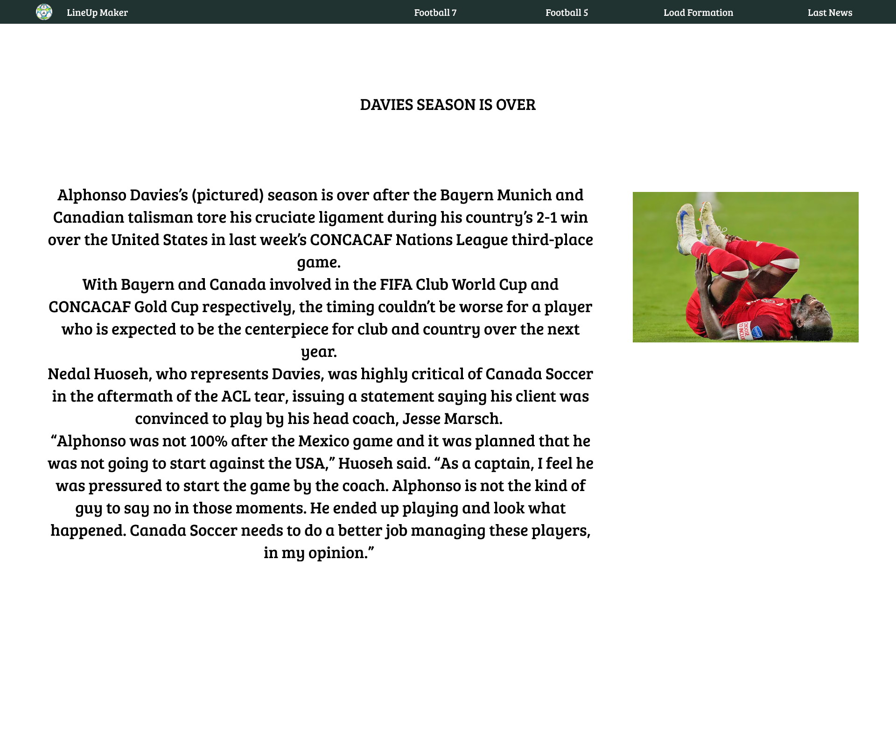

With Line Up Maker, you can make your own football formation. You can create your own players, assign a number, and even upload a picture of them. You can also download an image of the formation and export or import formations.
In addition, you will be able to see the latest news and updates on the site, such as the arrival of new formations or the implementation of tools that improve your user experience.
